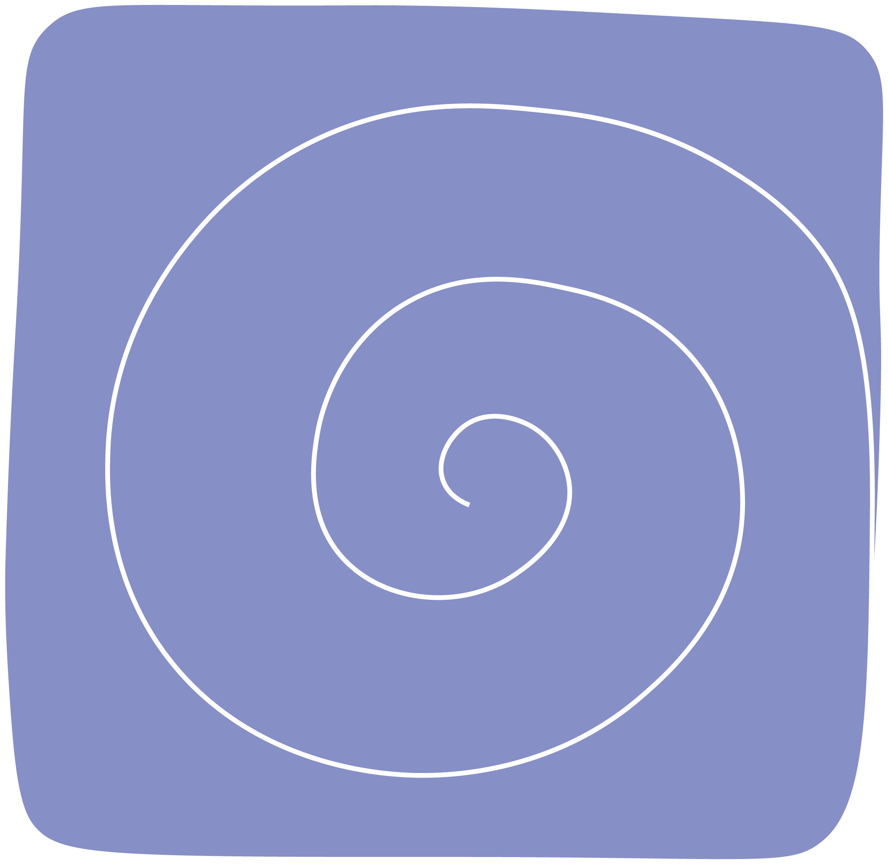

Proiectul

Corp de om
Volumul de poezie „Corp de om” e despre noi, oamenii. Despre corpul nostru viu, plin de emoții haotice, delimitate de granițele propriei ființe.
Poemele sunt emoții traduse în corp, fiecare cu un corespondent fizic regăsit în titlurile capitolelor: Tâmplele existenței, Gâtul descoperirii, Coastele fricii, Bustul iubirii, Dinții disperării și Degetele dorului
Autoarea

Maram Hmaidan
Poezia e peste tot, trebuie doar să îți deschizi ochii și să o găsești. Pe pământ și sub soare, în frunze, printre firele de iarbă, în plină stradă.
Maram scrie poeme de când se știe și acum a pus cap la cap primul ei volum, pentru care a pregătit un start mai neconvențional. Citește și descoperă ce îți face inima să tresară.